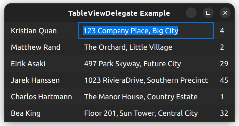

TableViewDelegate QML Type
A delegate that can be assigned to a TableView. More...
| Import Statement: | import QtQuick.Controls |
| Since: | Qt 6.9 |
| Inherits: |
Properties
Detailed Description

A TableViewDelegate is a delegate that can be assigned to the delegate property of a TableView. It renders each cell of the table in the view using the application style.
TableView { anchors.fill: parent delegate: TableViewDelegate {} // model: yourModel }
TableViewDelegate inherits ItemDelegate, which means that it's composed of two items: a background and a contentItem.
The position of the contentItem is controlled with padding.
Interacting with pointers
TableViewDelegate inherits ItemDelegate. This means that it will emit signals such as clicked when the user clicks on the delegate. You can connect to this signal to implement application-specific functionality.
However, the ItemDelegate API does not give you information about the position of the click, or which modifiers are being held. If this is needed, a better approach would be to use pointer handlers, for example:
TableView { id: tableView delegate: TableViewDelegate { TapHandler { acceptedButtons: Qt.RightButton onTapped: someContextMenu.open() } TapHandler { acceptedModifiers: Qt.ControlModifier onTapped: tableView.doSomethingToCell(row, column) } } }
Note: If you want to disable the default behavior that occurs when the user clicks on the delegate (like changing the current index), you can set pointerNavigationEnabled to false.
Editing cells in the table
TableViewDelegate has a default edit delegate assigned. If TableView has edit triggers set, and the model has support for editing model items, then the user can activate any of the edit triggers to edit the text of the current table cell.
The default edit delegate will use the Qt.EditRole to read and write data to the model. If you need to use another role, or otherwise have needs outside what the default edit delegate offers, you can always assign your own delegate to TableView.editDelegate.
See also Customizing TableViewDelegate and TableView.
Property Documentation
current : bool |
This property holds whether or not the delegate represents the current index in the selection model.
selected : bool |
This property holds whether or not the delegate represents a selected index in the selection model.